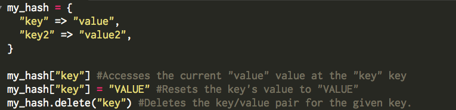
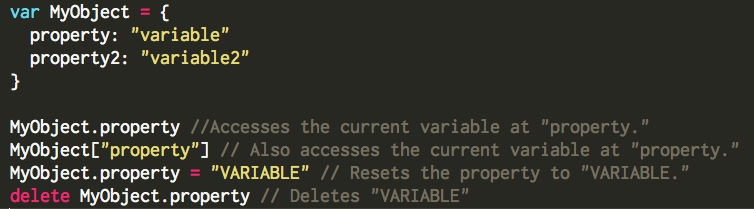

Ruby Hashes vs. Javascript Objects
Week 7
Storing data in JavaScript and Ruby
October 30, 2014
Ruby and JavaScript two are languages that have very different uses and syntax, but logically work fairly similar. For instance, to store collections of data Ruby and JavaScript both have arrays. Arrays are a good way to store unordered lists of data, but sometimes you need to give each piece of data a specific name to be able to access it easier. In Ruby, you would do this with a hash. But there is no equivalent to a Ruby hash in JavaScript. Instead, JavaScript has objects, which function slightly differently but can essentially be used the same way as hashes.
Ruby Hashes
In Ruby, a hash is a collection of key/value pairs that stores information. Hash values can be accessed by calling on the key that corresponds to each value. These values can be strings, integers, arrays, or even other hashes. Values can be reassigned with the equal sign. Key/value pairs can be deleted by typing the hash name followed by “.delete” followed by the value’s key in parenthesis. These commands are all shown in the following example:

JavaScript Objects
JavaScript object work much the same way as Ruby hashes. The Javascript equivalent of Ruby keys are called properties. Each property is a variable, and as such follows the same rules as any other JavaScript variable. Object properties can be strings, numbers, functions, or other objects. Properties can be accessed or created by typing the object name, then the name of the property. There are two syntactical ways to call the property: either with a period between the object and the property or with square brackets around the property, as in the example below. It’s important to note that creating a new property is done the same way as accessing an existing property. Object properties can be deleted by simply typing “delete” and the space bar before the property. See the code below for examples:

Both Ruby hashes and JavaScript objects are very flexible ways of storing lists of data. Ruby hashes have many built in methods to manipulate their data. In fact, they have more built-in methods than JavaScript, whereas in JavaScript you often have to write your own functions to manipulate your object. In this way, Ruby hashes are meant for storing and manipulating large sets of data in the back-end, while JavaScript is better for storing and accessing data in the front end.